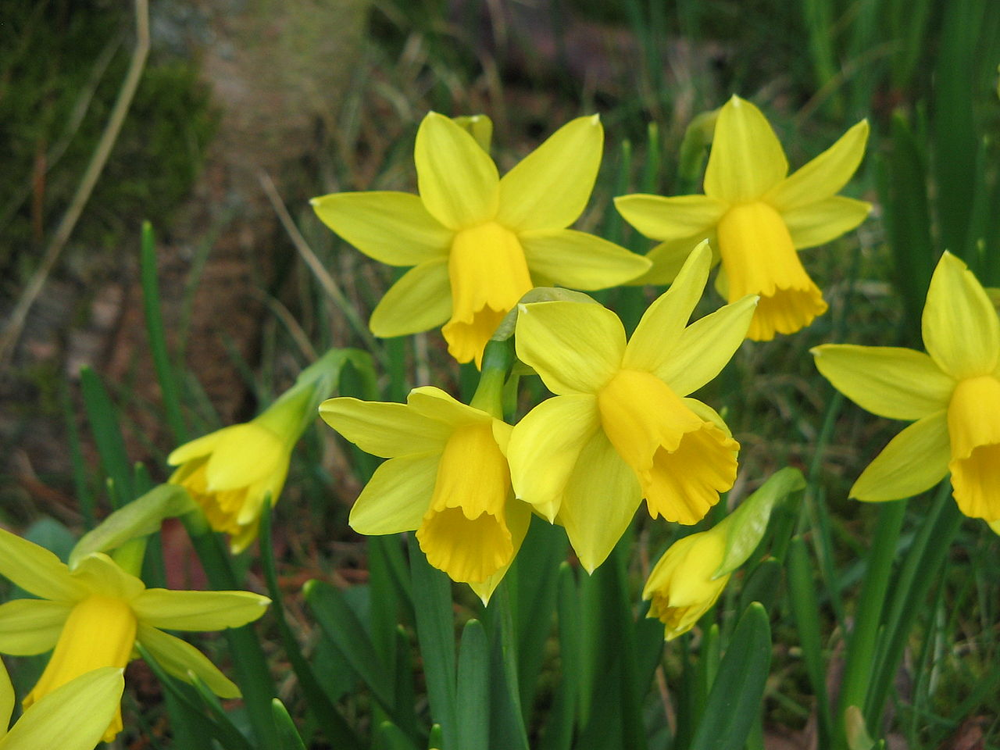

Pictures |
 |
2022-2023
April 25th: Talk at the IHP (photo by Bernhard Keller)

March 14th: Edinburgh from Calton Hill

March 11th: Stop at Cologne between two trains

November : Sevilla

September : Braid meeting 2022 (photo by Etienne Piskorski)
2021-2022
September : Summer school, The dual approach to Coxeter and Artin groups; Garside theory and applications